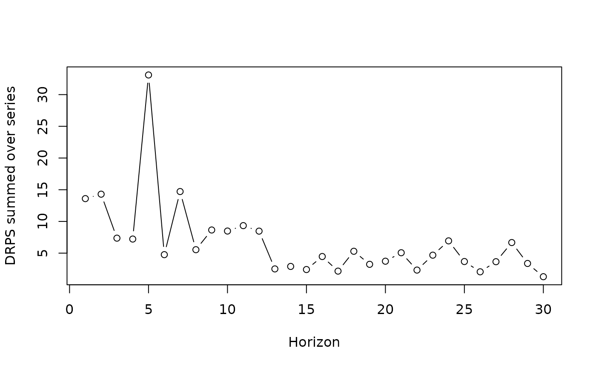

Proper scoring rules for mvgam_forecast objects
Source: R/score.mvgam_forecast.R
score.mvgam_forecast.RdScores the held-out forecasts of an mvgam_forecast object from
forecast.mvgam() or hindcast.mvgam() against the observations,
with one of eleven scoring rules. Lower scores are better.
Usage
# S3 method for mvgam_forecast
score(
object,
score = "crps",
interval_width = 0.9,
quantile_level = 0.5,
lower = -Inf,
upper = Inf,
log = FALSE,
weights = NULL,
...
)Arguments
- object
An
mvgam_forecastobject whosetypeis"response"or"expected". The held-out observations are then on the scale of the forecasts.- score
Character; one of the names above.
- interval_width
Width of the central interval that sets the per-series
in_intervalindicator and the"sis"penalty. The indicator is computed for"crps","drps","sis"and the joint scores. The other scores report it asNA.- quantile_level
Level of the
"qs"score. Defaults to0.5, the median.- lower, upper
Thresholds of
"twcrps"and"twenergy". The defaults-InfandInfgive the unweighted scores.- log
Logical.
TRUEapplieslog(x + 0.001)to observations and draws before scoring. Taken by"crps","sis","energy"and"variogram". PassingTRUEwith any other score is an error.- weights
Optional numeric vector of non-negative weights, one per series, for
"variogram".- ...
Unused. Anything passed here is refused.
Value
A named list with one data frame per series plus a trailing
all_series summary. Each series' data frame has columns score,
in_interval, interval_width, eval_horizon and score_type,
the requested score. A joint score leaves the per-series score
column NA.
For a univariate score, all_series sums the scores over the
series at each forecast time, with score_type prefixed "sum_".
Series forecast at their own times, as CAR() allows, are summed at
the times they share. Its eval_horizon then counts the times any
series is forecast at. For a joint score, all_series holds the
score at each horizon. A joint score needs every series at the same
forecast times.
Available scores
"crps"Continuous ranked probability score (Gneiting and Raftery 2007) of the empirical distribution of the draws.
"drps"Discrete ranked probability score, the CRPS of a count summed over its integer support.
"sis"Scaled interval score: the width of the central interval plus a penalty for an observation outside it, scaled by
2 / (1 - interval_width)."brier"Brier score of a binary outcome: the squared difference between the observation and the mean of the draws.
"logs"Log score,
-log f(y)for a kernel density estimate of the draws."dss"Dawid-Sebastiani score, which depends on the predictive mean and standard deviation alone.
"qs"Quantile (pinball) score at
quantile_level."twcrps"Threshold-weighted CRPS, which scores the forecast inside
[lower, upper]."energy"Energy score of the series jointly.
"variogram"Variogram score of order 0.5 of the series jointly (Scheuerer and Hamill 2015).
"twenergy"Threshold-weighted energy score.
References
Gneiting, T. and Raftery, A. E. (2007). Strictly Proper Scoring Rules, Prediction, and Estimation. Journal of the American Statistical Association, 102(477), 359-378.
Scheuerer, M. and Hamill, T. M. (2015). Variogram-based proper scoring rules for probabilistic forecasts of multivariate quantities. Monthly Weather Review, 143(4), 1321-1334.
See also
forecast.mvgam() produces the forecast.
compare_scores() scores several forecasts with one rule.
ensemble.mvgam_forecast() combines forecasts. The
forecast evaluation article
compares models by their scores at each horizon.
Other forecasting:
compare_scores(),
ensemble.mvgam_forecast(),
forecast.mvgam(),
hindcast.mvgam(),
lfo_cv.mvgam()
Examples
# \dontrun{
set.seed(11)
simdat <- sim_mvgam(family = poisson(), n_series = 2L,
n_timepoints = 120L, trend_model = AR())
mod <- mvgam(y ~ s(x),
trend_formula = ~ AR(p = 1),
data = simdat$data_train,
family = poisson(),
chains = 2, silent = 2)
#> Warning: 68 of 2000 (3.0%) transitions ended with a divergence.
#> See https://mc-stan.org/misc/warnings for details.
# Forecast the held-out times, then score each series
fc <- forecast(mod, newdata = simdat$data_test)
sc <- score(fc, score = "drps")
head(sc$series_1)
#> score in_interval interval_width eval_horizon score_type
#> 1 11.731191 0 0.9 1 drps
#> 2 6.451002 1 0.9 2 drps
#> 3 5.015142 0 0.9 3 drps
#> 4 4.689884 1 0.9 4 drps
#> 5 32.562311 0 0.9 5 drps
#> 6 3.100287 1 0.9 6 drps
# The DRPS summed over series at each forecast horizon
plot(sc$all_series$eval_horizon, sc$all_series$score, type = "b",
xlab = "Horizon", ylab = "DRPS summed over series")

# A joint score of both series at each horizon
head(score(fc, score = "energy")$all_series)
#> score eval_horizon score_type
#> 1 10.896537 1 energy
#> 2 10.335534 2 energy
#> 3 5.101671 3 energy
#> 4 5.610206 4 energy
#> 5 32.236838 5 energy
#> 6 3.358091 6 energy
# Next: compare_scores() ranks several models by one rule
# }